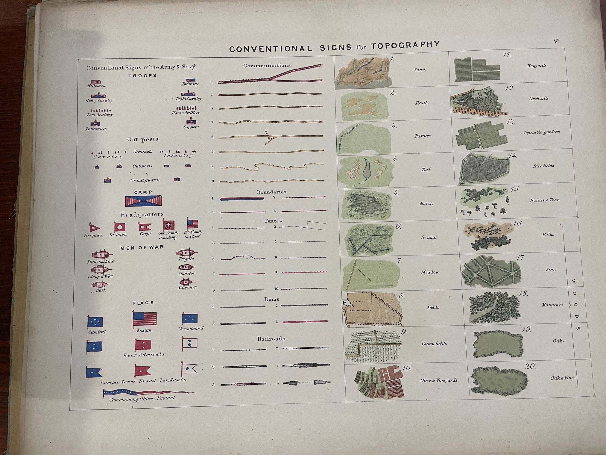
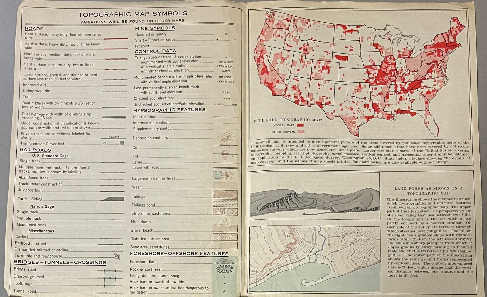
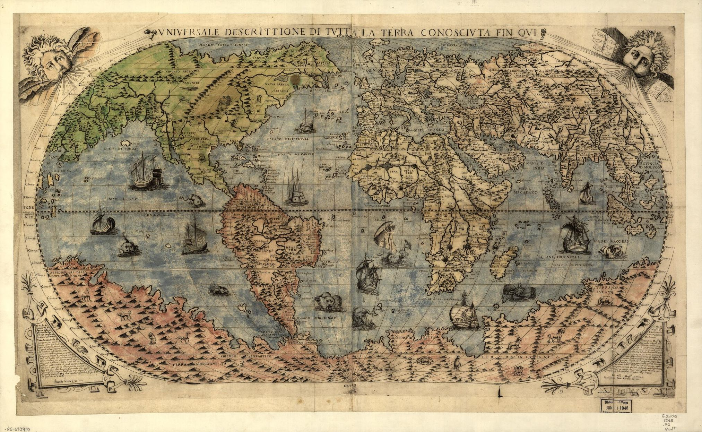

“One can make a map without shades and colors, but not
without lines” -Erwin Raisz, Principles of Cartography
Lines are foundational to how maps communicate. Take, for
instance, the map on your smart phone. To guide you between
two places, the map shows one line and encourages you to
ignore everything else. Mapmakers’ choices about the
placement, density, and purpose of lines combine to make maps
seem simple and objective— just follow this line and you’ll
have everything you need. But these lines are rarely as
straightforward as they seem. This exhibition follows lines on
maps to their extremes in examples from seemingly mundane
textbooks to avant-garde art. Through these lines, maps
rationalize their world view, even as they reveal perspectives
that are neither universal nor neutral.
The exhibition’s seven sections each delve into a fundamental
kind of line on maps as they developed in Europe and the
Americas. Chart your own path through the following pages to
explore how lines define—and simultaneously subvert—the rules
that make maps legible.
Numerous small and large variations in lines allow mapmakers
to communicate all sorts of facts, stories, and concepts. As
these instructional texts illustrate, lines can have a variety
of functions, even within one specific kind of map. A thin
line may mark a minor road; an undulating line may track a
river; and a straight line along the edges will often give the
map itself a border. Although these lines now seem obvious,
mapmakers developed these conventionalized, but still
flexible, symbols slowly over time. By codifying these
symbols, instructional texts like these spread a European
tradition of mapping throughout the world.
The amazing variety in types of lines is most apparent in
texts that explicitly teach mapmaking, a few of which you can
see in the examples below.

From
Manual of Topography and Text-book Of Tropographical
Drawing; For the Use of Officers of the Army and Navy,
Civil Engineers, Academies, Colleges, and Schools of
Science
by Joseph Enthoffer, 1870.Newberry Library
Institutions Standardize Map Lines
In this U.S. Coast Survey manual, engraver Joseph Entoffer
carefully detailed the colors, shapes, and types of lines
mapmakers should use to mark features important for military
purposes. To help standardize surveys of thousands of miles of
territory, federal and military institutions funded and
published atlases, manuals, and textbooks as a guide. Manuals
like Entoffer’s highlight that what may seem like universal
cartographic principles were purposefully designed by past
mapmakers.

United States Geological Survey,
Topographic Maps Washington, DC: United States
Department of the Interior, 1950
Newberry Library
Even as institutions evolved, they continued to standardize
lines. Almost a century after Entoffer published his work with
the U.S. Coast Survey, another federal agency, the U.S.
Geological Survey continued to create topographic maps of the
country. In the large surveys spanning thousands of sheets
created by the U.S. Geological Survey, mapmakers and readers
alike needed reminders of the subtle differences in lines.
Responding to changes in technology and new mapping needs
resulting from the second World War, such as aerial
photography, mapmakers added their own recommendations on how
to best use lines.
From Elements of Cartography, Fifth Edition by
Arthur H. Robinson, Joel L. Morrison, and Randall D. Sale,
1984.Newberry Library
Technology and Experts Shape Standards
This textbook classifies important graphic elements of maps,
instructing how to best represent the hue, shape, and spacing
of lines. Elsewhere, the authors comment that cartography is a
rapidly growing field because of evolving techniques and
innovations in technology for data gathering and machine
processing. Published over 100 years after Entoffer’s manual,
this textbook is an example of how scholars and scientific
disciplines continually standardized and updated cartographic
knowledge, down to the level of lines.
Catalogue
Altitude
Beginning in the eighteenth century, mapmakers in Europe and
the Americas experimented with how lines could represent depth
and altitude on a flat page. These lines replaced, but also
sometimes mimicked, the earlier convention of drawing small
hills and mountains on maps. These techniques, most notably
hachure lines and contour lines, meet the dual demands that a
map be both scientific and visually engaging.
Hachure lines run parallel to the slope. Short, thick strokes
show a steep pitch and long, thin strokes show a gradual
incline. Mapmakers often combine hachure lines with
crosshatching—the network of intersecting lines artists used
in printmaking to create shading—to enhance the illusion of
depth. Contour lines, in contrast, run perpendicular to the
slope. Each contour indicates a consistent change in altitude
and is often paired with a numerical key for mathematical
precision.
Marie Tharp and Bruce Heezen, Physiographic Diagram,
Atlantic Ocean (Sheet 1), 1957.David Rumsey Map Collection
Marie Tharp’s New Kind of Line
Artist
Marie Tharp and Bruce Heezen
Title
Physiographic Diagram, Atlantic Ocean (Sheet 1)
Year
1957
Dimensions
77 x 142 cm
Location
David Rumsey Historical Map Collection
How do you convince the world that the ocean floor
actually rumbles with a tumultuous topography?
Oceanographer Marie Tharp discarded contour and hachure
lines for a method that blended sonar data and pictorial
mapping. Its foundation, though, was still a line. As
these diagrams explain, Tharp turned data taken along the
surveying ship’s path into an exaggerated, jagged
elevation. These lines, extrapolated and rendered
pictorially to fill the whole map, enlivened the newly
discovered Mid-Atlantic Ridge.
Bruce Heezen, Marie Tharp, and Maurice Ewing, ‘The
Floors of the Ocean,’
The Geological Society of America Special Paper
65.Credit: Project Gutenberg.
Networks
Whether rivers or roads, train tracks or flight paths, the
network of lines on a map makes the world seem easily
accessible—or overwhelming complex. Built, manicured, or
hypothetical, these network lines give maps the power to help
us imagine moving through the world. They can empower us to
set off into an unfamiliar city. They have also emboldened
European colonizers to reach farther and farther to conquer
and extract. Taken as a whole, a network of lines on a map
makes connectivity seem inevitable and permanent. But, as the
artists in this section reveal, those lines can never quite
escape the evidence of the network’s contingency and frailty.
*Unsigned maps designed by graphic artist and architect
Massimo Vignelli, 1972.Newberry Library
Lines Redefine Space
Artist
Massimo Vignelli
Title
New York City Subway Map
Year
1972
Dimensions
44 x 44 cm and 44 x 46 cm, sheet 54 x 46 cm, folded to
18 x 10 cm.
Location
The Newberry Library
When travelers aren’t following every turn, cartographers
can take geographic liberties to represent an
interconnected network. Massimo Vignelli brought
minimalism to New York’s subway system, telling a story of
easy travel that obscures the geography above. His map
only lasted from 1972 to this 1978 edition before New
Yorkers clamored for more faithful street-level geography.
But the 2025 New York subway map returned to a similar
design.
Journeys
The practice of using journey lines to connect a trip’s start
and end points as a continuous path grew in popularity in
Europe starting in the seventeenth century. Journey lines both
facilitated new means of travel and were integrated into the
increasingly popular genre of travel literature. In strip
maps, for instance, journey lines could radically reshape the
map around a specific kind of movement. As illustrations in
travel writing, these lines could memorialize an ephemeral
experience and recreate, at least in our imagination, that
same journey. In doing so, the journey line offers a tool for
exploring the relationship between time, geography, and
shared, human experience.
From
Britannia, Volume the First. Or an Illustration of the
Kingdom of England and Dominion of Wales
by John Ogilby.David Rumsey Historical Map Collection
Lines Shape Imagined Journeys
Artist
John Ogilby
Title
Road from London
Year
1675
Dimensions
33 x 46 cm
Location
David Rumsey Historical Map Collection
The first of its kind, European mapmakers quickly imitated
this strip map atlas of England and Wales created by Royal
Cosmographer, John Ogilby. Strip maps depict journeys as
straight lines, just like a smart phone app provides
navigational directions. Ogilby’s guidebook targeted
growing interest in road travel, introducing viewers to
the “flourishing kingdom” by providing them with a
bird’s-eye perspective of an imagined journey. But to do
so, Britannia rotated the cardinal directions on each
roadmap and prioritized each map’s line over accuracy in
the roads’ shape. The orienting points on the map are not
north and south, but instead the journey’s start and end.
Folds
Not all lines on maps are made by a cartographer. When maps
are repeatedly folded and unfolded and stuffed into pockets on
trips, they develop another grid of lines just as enduring as
those in ink. These lines remind us that maps are always
living objects that carry their own imperfections and
histories. For contemporary artists, these inkless lines evoke
the unwritten rules that have shaped heavily segregated cities
like Chicago and Detroit. Redlining, a term that refers to
policies of race-based housing discrimination in US cities, is
rarely visible as a bright line on a map. Like lines from
folds, lines of segregation and discrimination instead only
become visible when we understand how people actually live in
these cities.
Edward Stanford, Map of London and Its Suburbs, 1866.David Rumsey Historical Map Collection
Lines of Use
Artist
Edward Stanford
Title
Stanford’s Library Map of London and Its Suburbs
Year
1866
Dimensions
192 x 164 cm.
Location
David Rumsey Historical Map Collection
The more people traveled with maps, the more they needed
them to fit in small places. For 19th century city maps,
owners often cut maps into rectangles and pasted them to a
sturdy fabric so they could repeatedly fold them without
unexpected rips. Look carefully at this example of a map
of London: how do the folds interact with the other lines
on the map? When was the last time you folded and unfolded
a map?
Boundaries
Boundaries can be some of the simplest and most provocative
lines on a map. These lines ask us to accept political borders
as being as natural to the landscape as a mountain range. They
are supposed to definitively mark long-lasting—if not
permanent—political divisions. Most of all, they claim to
constitute a national identity for those within these lines.
At the same time, these boundary lines make concessions when
unruly natural, geographical features interrupt them; they
frequently change in response to global events; and they
cannot tell the whole story of the historical, cultural, or
political loyalties of the people within them. In their search
for permanence, these boundary lines often end up exposing
their own limitations.
Jouzas Gabrys, Carte Ethnographique de l’Europe,
1918. Shows the ethnography of Europe, including eastern
Europe, parts of Russia and Turkey.Normal B. Leventhal Map & Education
Inventing Borders
Artist
J. Gabrys
Title
Carte ethnographique de l’Europe
Year
1918
Dimensions
81 x 107 cm + text (21 pages ; 21 cm)
Location
Norman B. Leventhal Map & Education Center
This map of Europe, showing different ethnic and national
groups marked in various shades, was created by Lithuanian
politician Juozas Gabrys. Published in 1918, around the
time of the Paris Peace Conference that ended the first
World War, this period was a tumultuous time for national
borders in Europe. State officials, scientists, and
academics believed that peace could be secured and that
any lingering conflicts could be solved through the
ethnographic map. As early as 1914, France began to set up
geographical commissions to start charting potential
territorial issues and creating ethnographic maps with the
intention of using them as major aids in decision making
during peace negotiations.1
Ethnographic maps like the
Carte Ethnographique claimed to be objective but
were influenced by the political beliefs of their
creators, the needs of the state, and flaws in statistical
sciences and data collection in this period.3
Looking at the Carte Ethnographique, notice which
groups are labeled, the size of their territorial claims,
and what colors Gabrys chose to represent them. Examine
the size of Lithuanian territory and the variety in types
of Lithuanians, and how Lithuanians are represented. Their
group appears in bold red colors that stand out against
the pale blues of the Poles and browns of the Russians,
and is one of the brightest colors on the entire map. By
emphasizing the population and unique history of
Lithuanians by highlighting different groups and his
choice of a bold color, Gabrys revealed some of his
political and personal biases.
Gabrys wanted Lithuanians to be internationally recognized
as a large and powerful ethnic group that deserved its own
nation, separate from surrounding countries.
4
By 1918, when his
Carte Ethnographique de l’Europe was published,
Gabrys had already organized multiple conferences in
France that brought together people from around the world
to make their own claims about ethnicity and nation.5
Ultimately, Gabrys used this ethnographic map to argue
that Europe had natural, ethnic borders that should
dictate its new political borders to secure international
peace. But Gabrys’ argument about ethnic nation-states
still relied on the binary logic of boundaries to redraw
nations. His dependence on boundary lines inscribed
majority rule over areas with more ethnic diversity and
historical complexity, foreshadowing future conflicts.
Notes
Gilles Palsky, “Emmanuel de Martonne and the
Ethnographical Cartography of Central Europe
(1917–1920),” Imago Mundi 54, no. 1
(January 2002): 111–19.
https://doi.org/10.1080/03085690208592961.
↩︎
Jason D. Hansen,
Mapping the Germans: Statistical Science,
Cartography, and the Visualization of the German
Nation, 1848-1914
(Oxford: Oxford University Press, 2015). See Chapter
1, “Counting Germans: The Search for Practical Means
to Measure Nationality,” in particular.
↩︎
Eberhard Demm, “The Propaganda of Juozas Gabrys for
Lithuania before 1914,”
Journal of Baltic Studies 21, no. 2 (Summer
1990): 121–30. See page 121.
↩︎
Joshua Hagen, “Mapping the Polish Corridor:
Ethnicity, Economics and Geopolitics,”
Imago Mundi 62, no. 1 (December 4, 2009):
63–82.
https://doi.org/10.1080/03085690903319325.
↩︎
Antonio García Cubas
Carta general de la República Mexicana, 1863.David Rumsey Historical Map Collection
Boundaries to Challenge History
Artist
Antonio García Cubas
Title
Carta general de la República Mexicana
Year
1863
Dimensions
125 x 146 cm.
Location
David Rumsey Historical Map Collection
“con más razón aún nostoros pordríamos decir, que
nuestra historia está escrita con sólo decir que
México y los Estados Unidos son vecinos. A lo menos la
Francia y la Inglaterra están separadas por el canal
de la Mancha; entre nuestra nación y la vecina no
existe otro lindero que una simple línea
matemática…………¡Dios salve á la República!!!” -Antonio García Cubas,
Diccionario geográfico, histórico y biográfico de los
Estado Unidos Mexicanos, 1898
Writing toward the end of his career, Antonio García
Cubas, one of the most important cartographers of Mexico,
expressed concern over the lack of a clear, natural
geographic border between Mexico and a land-hungry United
States to the north. Having witnessed the Mexican American
War that ended in 1848, when the United States forced
Mexico to cede almost one-third of its territory, García
Cubas recognized the influential role national maps could
play in disputes over territory and nation.
1
Take, for example, García Cubas’s 1863
Carta general de la República. Usually, we think
of borders as being made up of one line. Yet this map has
two northern borders. Measuring almost 4 feet by 5 feet,
this map was the first national map of Mexico made in
Mexico by a Mexican cartographer. García Cubas presented a
unified nation, and he made an argument about the
relationship between the Untied States and Mexico by
including two different northern borders of Mexico. One
border is marked by text, in Spanish, that reads “Treaty
of Guadalupe Hidalgo,” and includes the area known as the
Mesilla Valley. The other is marked with “Treaty of La
Mesilla” and is highlighted in red, following the contours
of present-day Mexico.
Other versions of the map did not contain this double
border. In the 1858 version, which was included in an atlas,
García Cubas only outlined in red a single northern border
and the map makes no mention of either the Treaty of
Guadalupe Hidalgo or Treaty of La Mesilla.
Antonio García Cubas
Carta general de la República Mexicana,
1858.David Rumsey Historical Map Collection
The difference between the atlas and the 1863 version
perhaps suggests that Antonio García Cubas wanted to make a
point about the power of cartography and Mexico as a nation
when his map was published in larger format. By presenting
Mexico as a complete nation with natural borders, García
Cubas argued that other nations like the U.S. should respect
its territorial claims.
Notes
Translated quote from Raymond B. Craib,
Cartographic Mexico: A History of State Fixations
and Fugitive Landscapes
(Durham: Duke University Press, 2004). See page 25.
The original quote appears in Antonio García García
Cubas,
Diccionario geográfico, histórico y biográfico de
los Estado Unidos Mexicanos, Tomo I (Mexico: 1898). See page 264.
↩︎
Craib, Cartographic Mexico. Ricardo Padrón,
The Spacious Word: Cartography, Literature and
Empire in Early Modern Spain
(Chicago: University of Chicago press, 2004).
Details on Gadsden Purchase and railroads from
Torsten Kathke,
Wires That Bind: Nation, Region, and Technology
in the Southwestern United States, 1854–1920
(Bielefeld, Germany: transcript Verlag, 2017).
↩︎
Rhumb Lines
Rhumb lines gave a rational order to the mysterious depths.
From the Spanish rumbo for a defined path, the rhumb
line directed mariners along a constant cardinal direction.
Guided by a rhumb line, a captain could set a course using
just a compass, which was crucial when measuring longitude at
sea was almost impossible. Rhumb lines were so important for
so long that by the eighteenth century they were simply part
of how many maps depicted water. For centuries, maps that were
never made to go to sea or even to plan sea routes still
incorporated rhumb lines because readers would be confused
without them.
R. Mount and T. Page.
A Generall chart from England to Cape Bona Esperance with
Newfoundland and Brazile, 1720.The Newberry Library
Lines All Over the Map
Artist
R. Mount and T. Page
Title
A Generall chart from England to Cape Bona Esperance
with Newfoundland and Brazile according to Mr. Edw.
Wrights projection
Year
1720
Dimensions
447 x 563 mm (neat line), on sheet remargined to 486 x
596 mm
Location
The Newberry Library
Rhumb lines are supposed to guide you. But they can also
be overwhelming. Although the rhumb lines on Mount and
Page’s map are straight, seemingly straightforward lines,
they quickly overpower all other information at sea so
that you might almost forget you’re looking at a map at
all.
Graticules
Even when we cannot see them, graticules provide the basis for
modern mapping. Encompassing the whole grid created by
perpendicular lines of longitude and latitude, graticules are
the scaffolding that holds the rest of the map in place. The
re-introduction of Claudius Ptolemy’s system for mapping with
graticules fundamentally changed how Europeans created maps
beginning in the 15th century. Ptolemy’s methods led to
centuries of experimentation with mathematical projections.
With different projections of the sphere of the Earth onto a
flat piece of paper, this grid bends and stretches to preserve
the mathematical relationship between locations on the map.

Ferando Bertelli,
Universale descrittione di tutta la terra conosciuta fin
qui, 1565. Based on an earlier map by Giacomo Gastaldi.The Library of Congress, Geography and Map Division
Longitude and Latitude Become Popular
Artist
Ferando Bertelli
Title
Universale descrittione di tutta la terra conosciuta
fin qui
Year
1565
Dimensions
41 x 75 cm.
Location
The Library of Congress, Geography and Map Division
A prominent mapmaker in Verona, Italy, Paulo Forlani
helped popularize what we now think of as a standard world
map: one that is oval or rectangular and held together by
parallel, horizontal lines and sloping vertical lines.
Emphasizing these lines on the map both helped people take
advantage of the map’s mathematical qualities and also
assured users that the map was accurate and trustworthy.
Bibliography
Carrera 2011
Carrera, Magali M.
Traveling from New Spain to Mexico: Mapping Practices
of Nineteenth-Century Mexico. Durham, NC: Duke University Press, 2011.
Craib 2004
Craib, Raymond B.
Cartographic Mexico: A History of State Fixations and
Fugitive Landscapes. Durham: Duke University Press, 2004.
Demm 1990
Demm, Eberhard. “The Propaganda of Juozas Gabrys for
Lithuania before 1914.”
Journal of Baltic Studies 21, no. 2 (Summer
1990): 121–30.
Hagen 2009
Hagen, Joshua. “Mapping the Polish Corridor: Ethnicity,
Economics and Geopolitics.” Imago Mundi 62, no. 1
(December 4, 2009): 63–82.
https://doi.org/10.1080/03085690903319325.
Hansen 2015
Hansen, Jason D.
Mapping the Germans: Statistical Science, Cartography,
and the Visualization of the German Nation,
1848-1914. Oxford: Oxford University Press, 2015.
Padrón 2004
Padrón, Ricardo.
The Spacious Word: Cartography, Literature and Empire
in Early Modern Spain. Chicago: The University of Chicago press, 2004.
Palsky 2002
Palsky, Gilles. “Emmanuel de Martonne and the
Ethnographical Cartography of Central Europe (1917–1920).”
Imago Mundi 54, no. 1 (January 2002): 111–19.
https://doi.org/10.1080/03085690208592961.
Contributors
David Weimer
David Weimer is the Robert A. Holland Curator of Maps
and the Director of the Hermon Dunlap Smith Center for
the History of Cartography.
Emily Lyon
Emily Lyon is a Chabraja Center for Historical Studies
Postdoctoral Fellow in Public History at the Newberry
Library’s Hermon Dunlap Smith Center for the History
of Cartography. She is a historian of race, gender,
visual culture, and U.S. empire in the early twentieth
century and in public memory. She received her PhD
from Northwestern University in 2024.